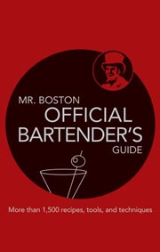
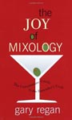
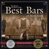

There is no shortage of bartending guides and books written about "the art of drinking" and many of them are fantastic reading material. It's in these books that you'll find histories about many classic drinks, discover your new favorite cocktail and learn the tricks (or mistakes) made by others behind the bar.

America's favorite drink-mixing guide since 1935, Mr. Boston: Official Bartender's Guide has been the resource of choice for generations of professionals and amateurs alike. Now this classic is better than ever, with updated information, 200 new drink recipes, and new photography.More than 1,400 recipes range from classic cocktails to today's trendiest drinks, all presented alphabetically with clear, easy-to-follow instructions. With the latest lowdown on liquors, beers, and wines, plus savvy advice on equipment, bar setup, and more, Mr. Boston has it all. Mr. Boston, part of the Barton Brands group, has been a widely recognized name in the bartending world for more than 70 years. The Mr. Boston brand includes a range of liquors and prepared cocktails as well as this 67th printing of The Official Bartender's Guide.

An original book on the craft of mixology is a rare gem. Gary Regan’s The Joy of Mixology is such a gem, one whose genius lies in Regan’s breakthrough system for categorizing drinks that helps bartenders—both professionals and amateurs alike—not only to remember drink recipes but also to invent their own.
For example, once you understand that the Margarita is a member of the New Orleans Sour Family, you’ll instantly see that a Kamikaze is just a vodka-based Margarita; a Cosmopolitan follows the same formula, with some cranberry juice thrown in for color. Similarly, the Manhattan and the Rob Roy, both members of the French-Italian family, are variations on the whiskey-vermouth-bitters formula.
In this way Regan brings a whole new understanding to the world of cocktails and how to make them. Not only will you learn how to make standard cocktails, you’ll actually learn to feel your way through making a drink, thereby attaining the skills needed to create concoctions of your own. And as Regan explains methods for mixing drinks, how to choose bartenders’ wares and select spirits and liqueurs, and the origins of many cocktails, you’ll feel as though you’re behind

From the deep mahogany of downtown to the polished brass of uptown, THE HISTORY AND STORIES OF THE BEST BARS OF NEW YORK recounts the drama, character and stories of the City's most important meeting places. Nearly fifty profiles containing vignettes of famous lore and little-known history are accented by stunning duotone images sure to intrigue both long-time New Yorkers and visitors to The City. THE HISTORY AND STORIES OF THE BEST BARS OF NEW YORK is a unique and necessary work, long overdue.